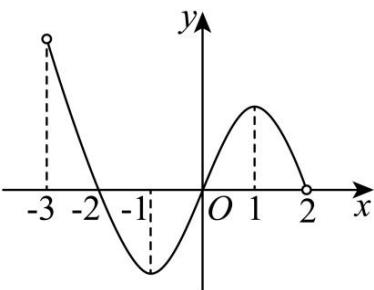

深圳中学 2024 级高二数学周测（4）
一、选择题：本题共8小题，每小题5分，共40分.在每小题给出的四个选项中，只有一个选项是正确的.
1. 若 \(f(x) = \frac{1}{1 + 2x}\) ，则 \(f(x)\) 在 \(x = 0\) 处的瞬时变化率为（）
A. 1
B. -1
C. 2
D. -2
2. 设函数 \(f(x) = \frac{1}{x^2} + 1\) ，则 \(\lim_{\Delta x \to 0} \frac{f(1 - 3\Delta x) - f(1)}{\Delta x} = (\quad)\)
A. 3
B. \(\frac{3}{2}\)
C. 6
D. 0
3. 直线 \(x + y - 1 = 0\) 是曲线 \(y = \ln x - 2x + a\) 的一条切线，则 \(a = (\quad)\)
A. -2
B. -1
C. 1
D. 2
4. 已知函数 \(f(x) = x(x - a)^2\) 在 \(x = 1\) 处取得极大值，则 \(a = (\quad)\)
A. 3或1
B. 3
C. 2
D. 1
5. 若 \(f(x)\) 是定义在区间 \((-3,2)\) 上的函数，其图象如图所示，设 \(f(x)\) 的导函数为 \(f'(x)\) ，则 \(\frac{f'(x)}{f(x)}>0\) 的解集为（）
A. \((-2,-1)\cup(1,2)\)
B. \((-1,0)\cup(1,2)\)
C. \((-2,-1)\cup(0,1)\)
D. \((-3,-2)\cup(0,1)\)

6. 若函数 \(f(x) = \frac{1}{2} x + \cos x\) 在 \(x \in [0, a]\) 上存在唯一的极大值点，则实数 \(a\) 的取值范围为（）
A. \(\left(\frac{\pi}{6}, \frac{13\pi}{6}\right]\)
B. \(\left[\frac{\pi}{6}, \frac{13\pi}{6}\right)\)
C. \(\left(\frac{13\pi}{6}, \frac{17\pi}{6}\right)\)
D. \(\left[\frac{13\pi}{6}, \frac{17\pi}{6}\right]\)
7. 若函数 \(f(x) = -x^2 + ax + 4\ln x\) 在(1,2)上有最大值，则实数 \(a\) 的取值范围为（）
A. \((-2, +\infty)\)
B. \((-2, 2)\)
C. \((- \infty, 2)\)
D. \((0, 2)\)
8. 已知 \(a = \frac{\ln 4}{4}, b = \frac{1}{\mathrm{e}}, c = \frac{2}{3} \ln \frac{3}{2}\) ，则 \(a, b, c\) 的大小关系为（）
A. \(a > b > c\)
B. \(b > a > c\)
C. \(a > c > b\)
D. \(b > c > a\)
二、多选题：本题共3小题，每小题6分，共18分.在每小题给出的四个选项中，有多项符合题目要求.全部选对的得6分，部分选对的得部分分，选对但不全的得部分分，有选错的得0分.
9. 已知函数 \(f(x) = \mathrm{e}^{x} - \mathrm{e}^{-x} - 2\cos x\) ，则（）
A. \(f(0) = -2\)
B. \(f^{\prime}(x) = \mathrm{e}^{x} + \mathrm{e}^{-x} - 2\sin x\)
C. \(f(x)\) 在 \(\mathbf{R}\) 上单调递增
D. 不等式 \(f(x) + 2 > 0\) 的解集为 \((0, + \infty)\)
10. 已知 \(a \in \mathbf{R}\) ，函数 \(f(x) = ax^3 + 2x + 1\) 有两个极值点 \(x_1, x_2\) ，则（）
A. \(a\) 是负数 B. \(x_1 + x_2 \neq 0\)
C. 函数 \(f(x)\) 图象的对称中心为 \((0,1)\)
D. 曲线 \(y = f(x)\) 在点 \((0, f(0))\) 处的切线方程为 \(y = 2x + 1\)
11. 对于函数 \(f(x) = \frac{x}{\ln x}\) ，下列说法正确的是（）
A. \(f(x)\) 在 \((0, e)\) 上单调递减，在 \((e, +\infty)\) 上单调递增
B. \(f(\pi) < f(2)\)
C. 设 \(g(x) = |f(x)| - 2k + 1\) 有3个不同的零点，则 \(k > \frac{e+1}{2}\)
D. 若方程 \(|f(|x|)| = k\) 有6个不等实数根，则 \(k > e\)
三、填空题：3 小题，每小题 5 分，共 15 分.
12. 已知函数 \(f(x)\) , \(g(x)\) 满足: \(f(x) + x^{2}g(x) = e^{x} - x\) ，且 \(f(1) = 1\) ，则 \(f'(1) + g'(1) =\) ____.
13. 已知函数 \(f(x) = (a - x)\ln x + x - 1\) ，若 \(\forall x_1, x_2 \in (0, +\infty), x_1 \neq x_2\) ，都有 \(\frac{f(x_1) - f(x_2)}{x_1 - x_2} < a\) ，则 \(a =\) ____.
14. 已知函数 \(f(x) = x^{3} + x - \sin x\) ，则关于 t 的不等式 \(f(t^{2} - t) + f(-t) < f(0)\) 的解集为 ____.
答题卡
班级____ 姓名____ 分数____
| 选择题 | 多选题 | |||||||||
| 1 | 2 | 3 | 4 | 5 | 6 | 7 | 8 | 9 | 10 | 11 |
12. ____ 13. ____ 14. ____
四、解答题：本题共2小题，共27分. 解答应写出必要的文字说明、证明过程或演算步骤.
15. 已知函数 \(f(x) = a^2 x^2 - 3ax \ln x, a > 0\)
(1)当 \(a = 1\) 时，求曲线 \(y = f(x)\) 在 \(\left(1, f(1)\right)\) 处的切线方程；
(2)讨论 \(f(x)\) 的零点个数.
16. 已知函数 \(f(x) = \mathrm{e}^{x}, g(x) = \frac{a}{x}, h(x) = f(x) - g(x), a \neq 0\) .
(1)当 \(a = \mathsf{e}\) 时，求曲线 \(y = h(x)\) 在点 \((1,h(1))\) 处的切线方程；
(2)若当 \(x < 0\) 时， \(h(x) < 0\) ，求 \(a\) 的取值范围；
(3)若存在两个不同的正数 \(m, n\) ，使得 \(f(m) = g(n)\) ，且 \(f(n) = g(m)\) ，求 \(a\) 的取值范围.